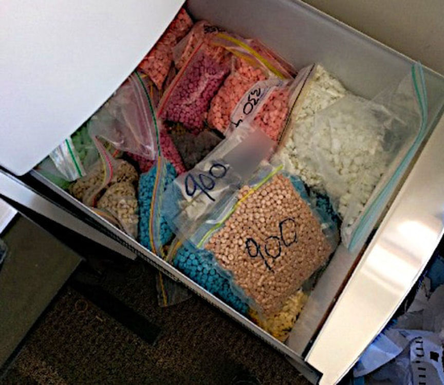
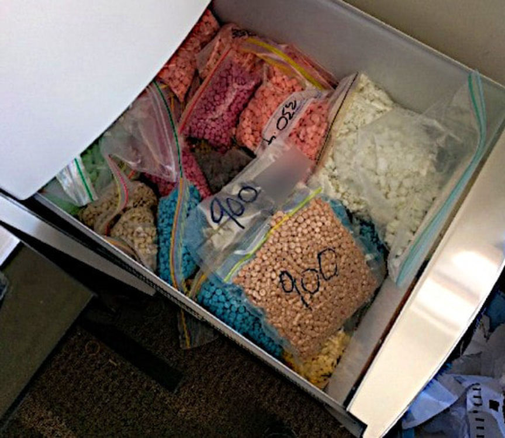

Operation CROZET Suspects Admit Darkweb Drug Trafficking
~3 min read | Published on 2019-11-13, tagged DarkWeb, Drug-Bust, Drugs, Pleaded-Guilty using 525 words.
Two residents of Melbourne, Australia, admitted they had used the dark web and the postal system to import drugs into Australia for distribution. The duo ran the drug trafficking operation from a two-bedroom apartment in Mernda, Melbourne.
Steen McBeth and Jackson Li both 28 years old were arrested on October 27, 2017, following months of an operation against the importation of drug packages into Victoria, Australia. The operation dubbed Operation CROZET by the Australian Federal Police (AFP) began in February 2017 after the Australian Border Force (ABF) intercepted international drug packages and forwarded them to the AFP for further investigation.
Crown prosecutor Andrew Buckland told the court that the AFP investigators involved in the operation intercepted and seized 123 international drug packages and 14 more mailed via Australia Post. The investigators reportedly found a total of 15.8 kilograms of MDMA, 2.6 kilograms of cocaine and 1.1 kilograms of ketamine in the packages. The international packages were reportedly addressed to 23 different mailboxes registered to 15 different names.
In the course of the operation, the investigators established that Li had rented a two-bedroom unit on Rowell Drive in Mernda. Li and McBeth reportedly used the apartment to store and package illicit drugs. After placing the pair under surveillance, the investigators reportedly saw them making trips to and from the apartment while carrying bags. The duo was also seen in post offices across Melbourne on different occasions. Mc Beth was reportedly seen in a supermarket while purchasing loads of toys, pillows, and cushions used by the pair to hide the drugs.
On October 27, 2017, AFP agents executed search warrants on McBeth and Li’s homes in Mernda and Kew. They also executed a search warrant on the apartment used by the pair to store and package the drugs. The searches resulted in the seizure of a large quantity of drugs including 1 kg of crystal meth, 700 grams of Cocaine, 10 kg of MDMA, 1 kg of Cannabis, 1 kg of Ketamine, 10 vials of testosterone and 16 liters of 1,4 butanediol. The police also seized a large quantity of cash and a Lamborghini they believed to be the proceeds of crime.
McBeth and Li were arrested at the end of the raid. They were charged with offenses related to importation, trafficking, and possession of border-controlled drugs and dealing with the proceeds of crime in the Melbourne Magistrates Court on the same day.
On November 13, 2019, McBeth pleaded guilty to charges that include importation of a commercial quantity of a border controlled drug and trafficking a commercial quantity of both an addictive drug and a border-controlled drug. Li pleaded guilty to trafficking a commercial quantity of both an addictive drug and a border-controlled drug.
The second phase of Operation CROZET carried out further investigations on McBeth and Li’s operation. The investigations led to the arrest of a 27-year-old man from Bulleen, Melbourne on March 7, 2019. He is suspected of playing a key role in the dark web drug trafficking operation.
McBeth and Li will be sentenced on December 19. In addition to prison time, they could be deported back to their home country, New Zealand.
Steen McBeth and Jackson Li both 28 years old were arrested on October 27, 2017, following months of an operation against the importation of drug packages into Victoria, Australia. The operation dubbed Operation CROZET by the Australian Federal Police (AFP) began in February 2017 after the Australian Border Force (ABF) intercepted international drug packages and forwarded them to the AFP for further investigation.
Drugs Seized by AFP During the Raid | AFP
Crown prosecutor Andrew Buckland told the court that the AFP investigators involved in the operation intercepted and seized 123 international drug packages and 14 more mailed via Australia Post. The investigators reportedly found a total of 15.8 kilograms of MDMA, 2.6 kilograms of cocaine and 1.1 kilograms of ketamine in the packages. The international packages were reportedly addressed to 23 different mailboxes registered to 15 different names.
In the course of the operation, the investigators established that Li had rented a two-bedroom unit on Rowell Drive in Mernda. Li and McBeth reportedly used the apartment to store and package illicit drugs. After placing the pair under surveillance, the investigators reportedly saw them making trips to and from the apartment while carrying bags. The duo was also seen in post offices across Melbourne on different occasions. Mc Beth was reportedly seen in a supermarket while purchasing loads of toys, pillows, and cushions used by the pair to hide the drugs.
On October 27, 2017, AFP agents executed search warrants on McBeth and Li’s homes in Mernda and Kew. They also executed a search warrant on the apartment used by the pair to store and package the drugs. The searches resulted in the seizure of a large quantity of drugs including 1 kg of crystal meth, 700 grams of Cocaine, 10 kg of MDMA, 1 kg of Cannabis, 1 kg of Ketamine, 10 vials of testosterone and 16 liters of 1,4 butanediol. The police also seized a large quantity of cash and a Lamborghini they believed to be the proceeds of crime.
McBeth and Li were arrested at the end of the raid. They were charged with offenses related to importation, trafficking, and possession of border-controlled drugs and dealing with the proceeds of crime in the Melbourne Magistrates Court on the same day.
On November 13, 2019, McBeth pleaded guilty to charges that include importation of a commercial quantity of a border controlled drug and trafficking a commercial quantity of both an addictive drug and a border-controlled drug. Li pleaded guilty to trafficking a commercial quantity of both an addictive drug and a border-controlled drug.
The second phase of Operation CROZET carried out further investigations on McBeth and Li’s operation. The investigations led to the arrest of a 27-year-old man from Bulleen, Melbourne on March 7, 2019. He is suspected of playing a key role in the dark web drug trafficking operation.
McBeth and Li will be sentenced on December 19. In addition to prison time, they could be deported back to their home country, New Zealand.